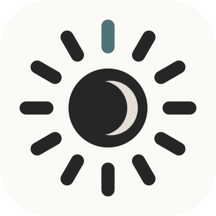
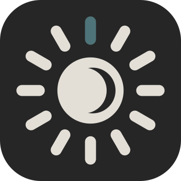
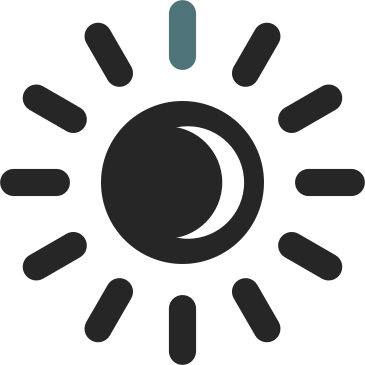
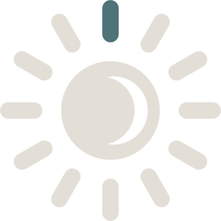

The Thinking Place
Brand guide · October 2026. The logo, colours and type used in the app, the website and the store listings. Files are in this folder.
Logo
Twelve rays, one for each path, around a crescent moon: a thought rising, and a quiet moment at the end of the day. The single teal ray is today's path. The rays never change colour except that one.

logo-light.svg · app icon, light
logo-dark.svg · app icon, dark
mark-light.svg · on paper, no tile
mark-dark.svg · on ink, no tile| Clear space | Keep at least one ray's length free around the mark. |
| Smallest size | 24 px on screen (status bar); below 48 px, use the mark without the tile. |
| Don't | Recolour the rays, add shadows or outlines, rotate it, or put it on a busy photo. |
| PNG versions | logo-light/dark-512/1024.png, mark-light/dark-512/1024.png, play-store-icon-512.png (Google Play listing). |
| Generated | Every icon (Android, web, splash, status bar) is drawn from logo-light.svg by tools/make_android_icons.py, so a new logo file updates them all. |
Colours
The same values everywhere: logo, app, website (colors.json, style.css). All text pairs meet WCAG AA.
Paper
light background
#FBFAF7light background
Ink
light text · dark background · 14.5:1
#262626light text · dark background · 14.5:1
Stone
dark text (11.4:1) · light lines
#E3DFD7dark text (11.4:1) · light lines
Teal
today's ray · path names on paper (5:1)
#4E7378today's ray · path names on paper (5:1)
Teal on dark
path names on ink (6.6:1)
#8FB2B6path names on ink (6.6:1)
Muted
secondary text, light / dark
#6B6862 / #A09B92secondary text, light / dark
Type
A thought is set in a book serif. The question is in italics.
Body and interface text in the phone's own sans-serif (San Francisco on iPhone and Mac, Roboto on Android, Segoe UI on Windows), light weight.
Path names in spaced capitals
| Serif | Literata, regular and italic (free, SIL Open Font License; files in fonts/) · thoughts, titles, questions |
| Sans | -apple-system, "Segoe UI", system-ui, sans-serif · everything else |
| Why Literata | Designed for long reading on screens (it is Google Play Books' typeface), with a calm italic. Bundled in the app (about 75 KB), so it looks identical on every phone and works offline. |
Voice
| Calm | Short sentences, no exclamation marks in the interface (the goodbye lines are the exception). |
| Plain | Explain like a good teacher: no jargon without a note, no "unlock", "streak" or "level up". |
| Honest | Free, no ads, no tracking: say it simply, never as a sales pitch. |
| Names | "The Thinking Place" in full; "Thinking" only as the home-screen label. Schools of thought are "paths". |